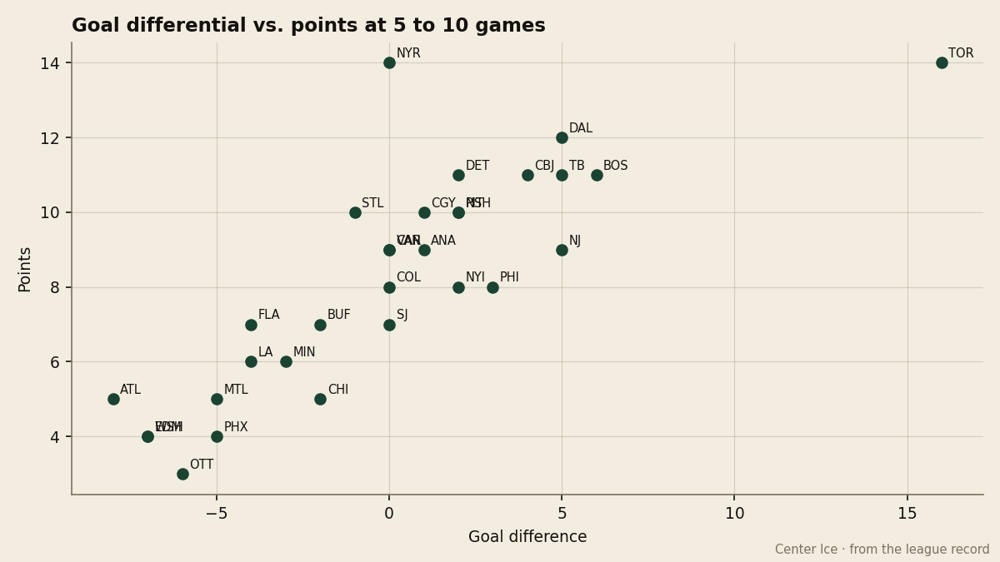
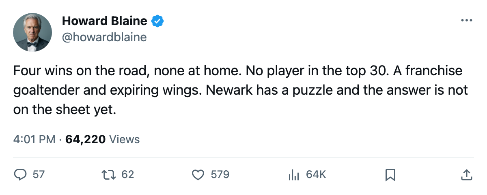
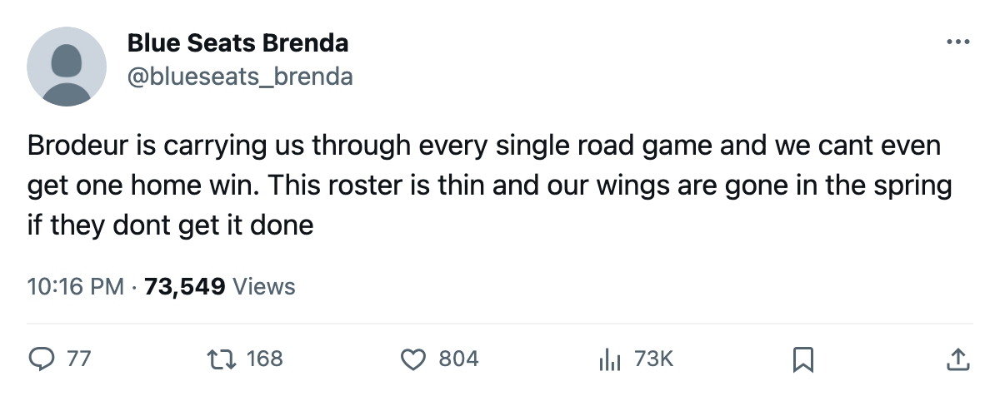

Four and None: New Jersey Has Won Every Road Game and Lost Every Home One
The Devils' 4-0 record on the road is the league's only perfect one. Their 0-2 record at home is the only scoreless one. And the club with the second-highest prestige in hockey has no name in the top 30.
 Howard BlaineSenior writer, The Blaine Rankings · The Hockey Gazette
Howard BlaineSenior writer, The Blaine Rankings · The Hockey Gazette
The piece
 New Jersey Devils has played 6 games. It has won 4 of them. Every one of those 4 wins came in a building other than its own, and the Devils are 0-2 at home. No other club in the 30-team league has a perfect road record or a winless home record at this point in October.
New Jersey Devils has played 6 games. It has won 4 of them. Every one of those 4 wins came in a building other than its own, and the Devils are 0-2 at home. No other club in the 30-team league has a perfect road record or a winless home record at this point in October.
The split is not a rounding artifact. The 4 road victories came at  Buffalo Sabres (4-2),
Buffalo Sabres (4-2),  Atlanta Thrashers (4-2),
Atlanta Thrashers (4-2),  Carolina Hurricanes (3-1) and
Carolina Hurricanes (3-1) and  Ottawa Senators (3-1), three different divisions. Both home losses came against
Ottawa Senators (3-1), three different divisions. Both home losses came against  Nashville Predators (2-3 OT) and
Nashville Predators (2-3 OT) and  Columbus Blue Jackets (2-4). The Devils have not yet played a single Atlantic opponent, and their 9 points, which place them 6th in the East, were all earned with the visiting sweater on.
Columbus Blue Jackets (2-4). The Devils have not yet played a single Atlantic opponent, and their 9 points, which place them 6th in the East, were all earned with the visiting sweater on.
The goal differential tells you the team is genuinely good: 18 scored, 13 allowed, a plus-5 margin that ranks 3rd in the league per game behind  Toronto Maple Leafs and
Toronto Maple Leafs and  Boston Bruins. All of that plus-5 was manufactured on the road. At home, New Jersey scored 4 goals in 2 games and allowed 7.
Boston Bruins. All of that plus-5 was manufactured on the road. At home, New Jersey scored 4 goals in 2 games and allowed 7.

The man holding the back end
 Martin Brodeur95 has started 5 of the 6. His 1.71 goals against and 0.919 save percentage are the best of any goaltender with 5 or more starts in the league. At 92 overall in the Book, he is the second-highest-rated netminder behind
Martin Brodeur95 has started 5 of the 6. His 1.71 goals against and 0.919 save percentage are the best of any goaltender with 5 or more starts in the league. At 92 overall in the Book, he is the second-highest-rated netminder behind  Roberto Luongo94 at 97, and Brodeur has done his work against weaker forward groups, because the teams that visit New Jersey are not the ones that visit Toronto.
Roberto Luongo94 at 97, and Brodeur has done his work against weaker forward groups, because the teams that visit New Jersey are not the ones that visit Toronto.
Brodeur's contract runs 3 more years at $6.70M. He is 33, and the goaltending looks like it holds. The question in Newark is whether the forwards in front of him can score at home.
No one is carrying the offense
Scan the top 30 in league scoring. No New Jersey player appears. The Devils have scored 18 goals in 6 games, which is 3.0 per game, 10th in the league. The absence of a name on the scoring column at a club with 1,070 prestige points, the second-highest figure in hockey behind Toronto's 1,104, is the sort of gap that shows up in April.
New Jersey Devils carries the 12th payroll at $58.50M and costs $6.50M per point, which is mid-pack. The efficiency is fine, but the spending has not produced a man the league's top scorer's list acknowledges.
What the contract book says
From the salary ledger, the Devils carry 3 skaters with 0 contract years remaining among their top 10 by salary: a left wing at $4.90M, a right wing at $2.10M, and one more at $2.10M or below. The top forward on the club's payroll has 1 year left. The second-highest-paid forward has 4 years. The goaltender has 3. So the spine is safe, but the wings that flank it are not.
New Jersey Devils went out in the first round last April on 6 games and 2 wins. The contract structure says that outcome is available again unless the front office moves before what the calendar has as the trade deadline, 143 days from now.
The schedule answers the question in November
New Jersey's next meeting against an Atlantic opponent is not yet scheduled. The division series table shows 0 games played, 20 remaining. Every point the Devils have banked so far came against clubs they will face again, which means the divisional gauntlet has not started. If the 4-0 road record was built against weaker opposition and the 0-2 home record reflects something structural, November will separate the two explanations.
The Devils play  Tampa Bay Lightning at home on October 30 and Boston Bruins at home on November 2. Those are the first tests with something resembling a top-6 forward group in the building. If Brodeur's 1.71 survives both, the desk will stop writing about the road team that cannot win at home and start writing about the team that wins regardless of where it plays. If it does not, the gap between a plus-5 on the road and a minus-3 at home will widen into the kind of split no goaltender closes.
Tampa Bay Lightning at home on October 30 and Boston Bruins at home on November 2. Those are the first tests with something resembling a top-6 forward group in the building. If Brodeur's 1.71 survives both, the desk will stop writing about the road team that cannot win at home and start writing about the team that wins regardless of where it plays. If it does not, the gap between a plus-5 on the road and a minus-3 at home will widen into the kind of split no goaltender closes.

